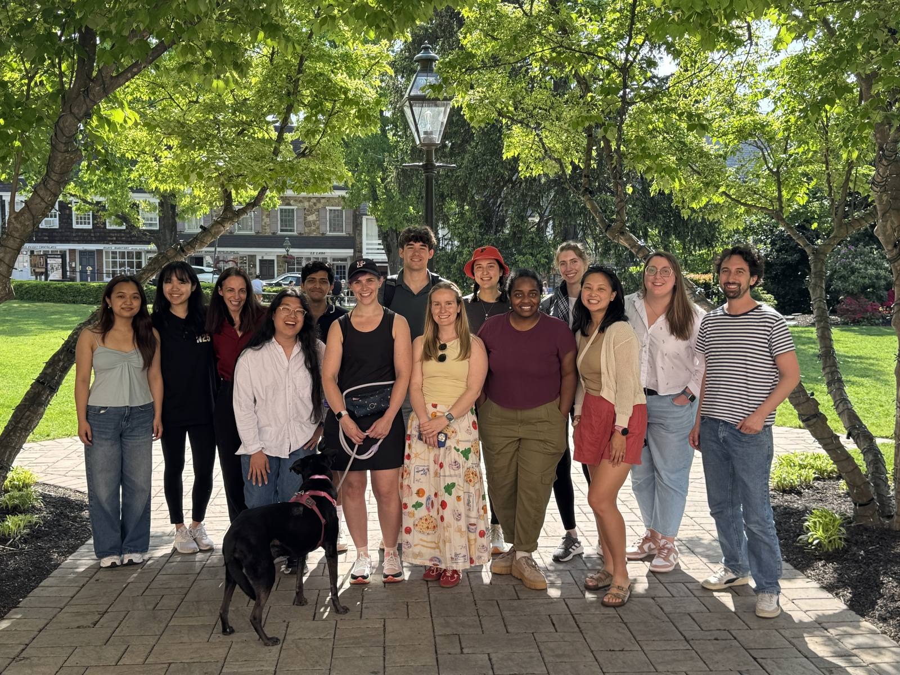
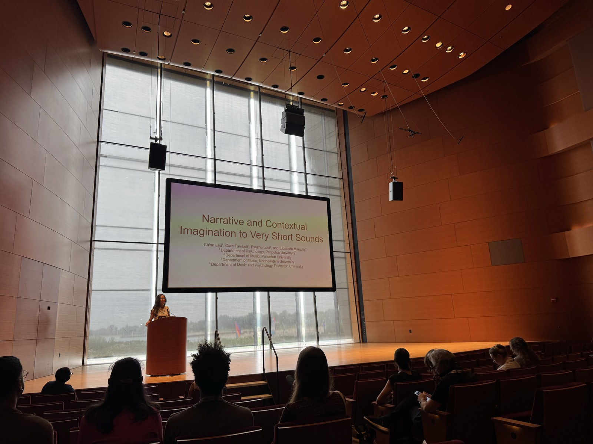

Why 500 milliseconds of sound creates entire narratives.
Play someone half a second of sound. Just 500 milliseconds, barely enough time to blink.
Ask them what they imagined.
They'll tell you a story.
The research question
At Princeton's Music Cognition Lab we asked how little acoustic information a person needs to construct meaning. Previous research on music and narrative used excerpts typically ranging from 20 to 90 seconds, long enough for melody, rhythm, and structure to develop. We wanted the other end of that: whether a sound too brief to consciously register could still trigger imagination.
We played participants sounds as short as 500 milliseconds and varied four things about them. Timbre is the quality that makes a violin and a flute sound different playing the same note. Attack time is how fast the sound arrives, and warble is a slow wobble in its pitch or loudness. Duration is just how long it lasts. Then we asked what they imagined, either as a story or as a real-world setting where they would expect to hear it.
The finding
Even at 500 milliseconds, people imagined stories at a rate comparable to what prior studies found using full musical excerpts many times longer, which is enough to say brief sounds are sufficient. The question then became which acoustic features drive it.
Timbre and duration mattered most for both story generation and narrative engagement, with timbre showing the stronger effect. Noise-based sounds, which have no single clear pitch, triggered stories more reliably than pure sine tones did. Different people imagined similar things for the same sound, which suggests acoustic features map to meaning fairly predictably.
Two groups heard the same sound. One described the real-world setting they would expect it in, and the other described a story it prompted. Their descriptions matched each other more closely than either matched the descriptions of a different sound, which suggests context and narrative are shaped by the same acoustic information.

The extension: what happens when AI listens
The human findings raised an obvious next question. If specific acoustic features reliably shape narrative imagination in people, what happens when a large language model hears the same sounds? Do the patterns we observed in human perception replicate, diverge, or break down entirely when the listener isn't human?
I'm extending the research to run that comparison. I am looking hardest at the places where the model diverges from people, since that is where a human-specific mechanism would show up. I presented initial findings in July at SMPC, the Society for Music Perception and Cognition conference, at Northwestern.
Why this matters for design
Micro-interactions matter more than most product teams think they do. The texture of a hover sound sets emotional context, and it does that work before the user is consciously aware of it. A survey taken afterward never catches it, since by then the person is reasoning about the sound rather than reacting to it. The card that links to this essay plays half a second of harp when you hover it, which is the same effect at product scale.
What this research is teaching me
People built a whole scene out of half a second of noise, over and over, across the entire stimulus set. Half a second is enough for someone to imagine a place and the people in it. The manuscript is under review with Cara Turnbull, Psyche Loui, and Elizabeth Margulis, and the AI comparison is what I am running now, which is the work I most want to be doing.
First-authored manuscript under review, with Cara Turnbull, Psyche Loui, and Elizabeth Margulis. Research conducted at the Princeton Music Cognition Lab. Findings presented at SMPC 2026, Northwestern University, July 2026.